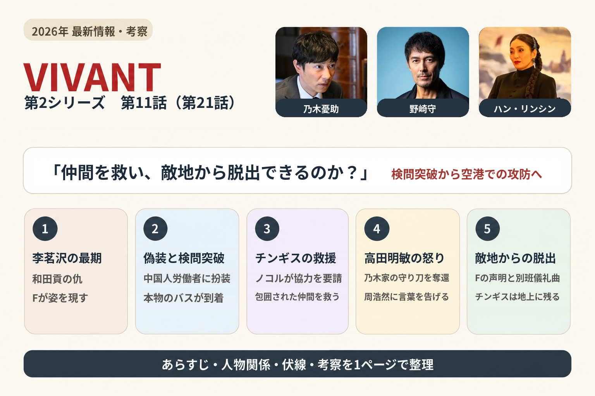
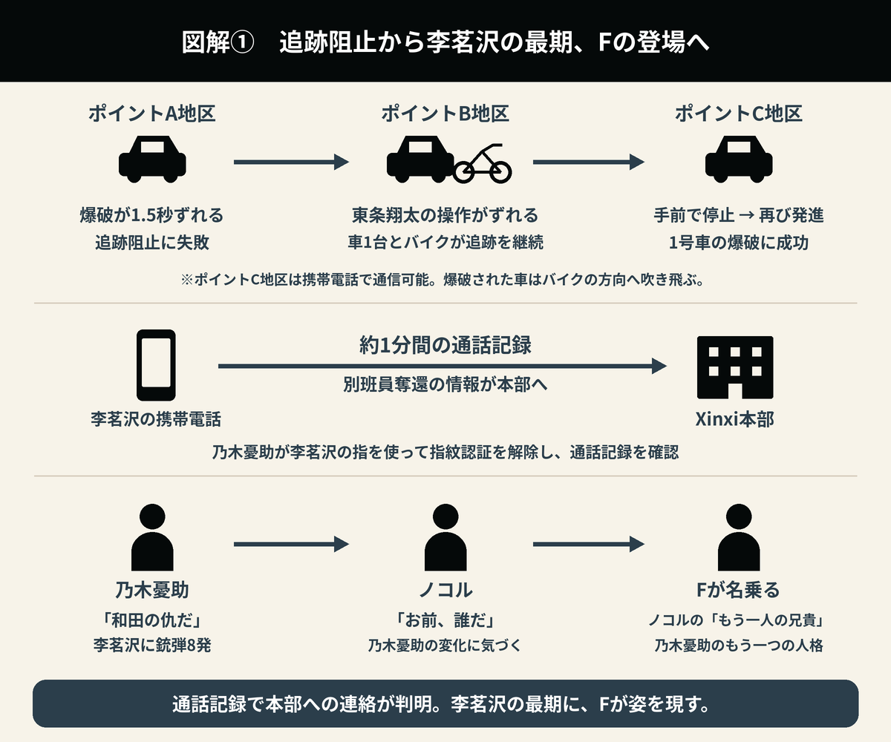
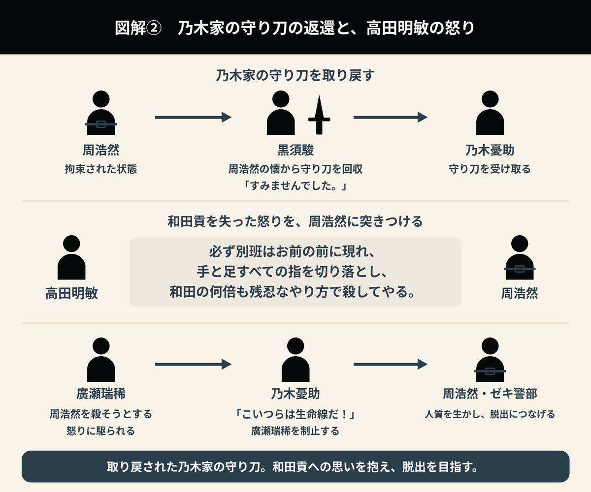
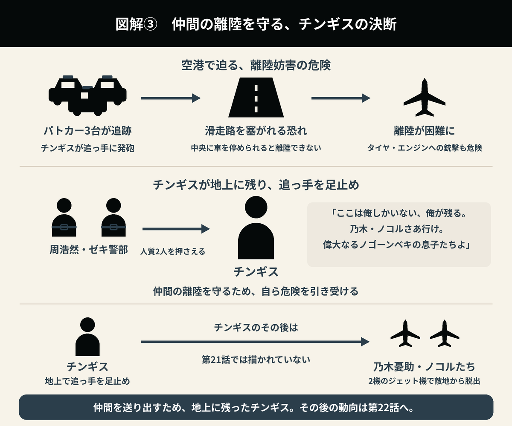

第21話｜チンギスの決断と
敵地からの脱出
シャキ城から別班員を救出した乃木憂助たち。しかし、追っ手である李茗沢（リ・ミンヅァ）たちを食い止められず、携帯電話で通信できるエリアまで追跡を許してしまう。
別班員の奪還はXinxi（シンシー）本部にも伝わり、乃木憂助たちは絶体絶命の局面を迎える。
ガラマン空港への道を塞ごうとするXinxi（シンシー）。その包囲網によって、窮地に立たされる乃木憂助たち。果たして、帰国への希望は残されているのか！？

1. 和田貢の仇・李茗沢（リ・ミンヅァ）が死亡――ノコルの前に姿を現したF
追跡を阻止するため、爆弾が仕掛けられていたのは、A・B・C地区の3か所だった。
しかし、ポイントA地区では爆破のタイミングが1.5秒ずれ、追っ手を止めることに失敗する。
ポイントB地区では修正プログラムこそ間に合ったものの、東条翔太が爆破ボタンを押すタイミングがずれてしまった。
そのため、バイクに乗った李茗沢（リ・ミンヅァ）と、村民の車を使った追跡車両1台が爆破を免れ、そのまま追跡を続ける。
さらに、ポイントC地区では携帯電話の電波が入ることが判明した。警視庁サイバー犯罪対策課の東条翔太は、自分のミスだと乃木憂助に謝った。
ここまでが第20話のラストで描かれ、今回の第21話へと続いた。
追跡していた2台は、ポイントC地区の少し手前で停止する。
乃木憂助たちは、追っ手が携帯電話で連絡を取っているのではないかと疑った。そこで、乃木憂助とノコルが乗る車は進行方向を変え、確認に向かう。
乃木憂助は東条翔太に、追跡車両が再び動き出し、ポイントC地区に入ったら爆破するよう指示した。
ポイントC地区では、1号車の爆破に成功する。爆破された車はバイクの方向へ吹き飛んだが、この時点では、バイクに乗っていた李茗沢（リ・ミンヅァ）がどうなったのかは分からなかった。
乃木憂助は、倒れていた李茗沢（リ・ミンヅァ）の指を使って携帯電話の指紋認証を解除し、通話記録を調べる。
そこには、Xinxi（シンシー）本部と約1分間通話した記録が残されていた。
乃木憂助は李茗沢（リ・ミンヅァ）に「和田の仇だ」と告げ、銃弾を8発撃ち込んだ。
その様子を見たノコルが「お前、誰だ」と問いかける。
すると乃木憂助は、ノコルにとっての「もう一人の兄貴」であるFと名乗った。

2. 衛星もHQ-9も使用不能――樊林杏（ハン・リンシン）が空港への包囲網を張る
Xinxi（シンシー）本部では、樊林杏（ハン・リンシン）が、シャキ城から別班員を救出した乃木憂助たちの位置を確認していた。
しかし、部下は、システムがハッキングされ、衛星も使えず、正確な位置をつかめないと報告する。
10人体制で衛星の制御を取り戻そうとしていたものの、凄腕のハッカーを前に、手も足も出ない状態だった。
周浩然（シュウ・ハオラン）は、李茗沢（リ・ミンヅァ）が最後にGPS位置情報を発信した地点から真っすぐ進むと、道が二手に分かれると報告する。
左へ進む25号線は、サンベ地区を通り、アゼルバイジャン国境へ向かうルートだった。
そのサンベ地区には、ガラマン空港がある。
樊林杏（ハン・リンシン）は、プライベートジェットで来訪していたチョッキーの出国を差し止めるよう、ゴルバド政府の外務大臣に要請した。
これに対し、外務大臣は、サンベ地区での検問はすぐに実施するものの、チョッキーは、いわば国賓として迎えている来訪者であり、出国差し止めの要請は受けられないと断った。
さらに、HQ-9も別班側のハッカーに制御を奪われていたことが判明する。
乃木憂助たちが通過する際には、ブルーウォーカー・太田梨歩によって、サンベ地区の監視カメラもすべて遮断された。
3. 中国人労働者に扮して大型バスで移動――田代久美子たちが脱出を支援
道が二手に分かれる地点で、乃木憂助は、空港へ向かう左側ではなく、反対の右側へ進むよう指示した。
向かった先は、ゴルバド国際製鉄会社QBPiSの工場跡地だった。
そこでは、別班レディ・田代久美子と、エージェント・ナティックが準備を進めていた。
田代久美子は、本物のバスのスターターには細工を施しており、修理には45分以上かかると説明する。
また、田代久美子は乃木憂助に、作戦中は雰囲気ががらりと変わり、まるで別人のようだと話した。
乃木憂助たち奪還チームは、中国人労働者に扮し、大型バスでガラマン空港へ向かう作戦だった。
救出された別班員たちは、化粧を施して傷を隠した。
手配書も、すでにブルーウォーカー・太田梨歩によって偽造されていた。
バスの運転は、新庄浩太郎が担当する。
4. 本物のバスが予定より早く到着――周浩然（シュウ・ハオラン）に偽装を見破られる
シャキ城から別班員が奪還されたことを知ったXinxi（シンシー）の責任者・樊林杏（ハン・リンシン）は、地元警察を動かし、大規模な包囲網を張り巡らせた。
乃木憂助たちは、中国人労働者に扮して検問を突破しようとする。
しかし、故障させて出発を遅らせたはずの本物のバスが、予定より早く到着してしまう。
そのバスは、乃木憂助たちのバスから20台後ろ、検問の列の最後尾に並んだ。
別班員のデータを改ざんしていたため、乃木憂助たちは検問を通過した。
ところが、その瞬間、Xinxi（シンシー）の周浩然（シュウ・ハオラン）たちが車2台で現れ、道を封鎖する。
周浩然（シュウ・ハオラン）は、同じ「1号車」のバスが2台も列に並んでいることと、プロフィールのデータが改ざんされていることを警察官に指摘した。
乃木憂助たちのバスは、地元警察官とXinxi（シンシー）の兵士によって完全に包囲され、四面楚歌の状態に陥る。
乃木憂助は、周浩然（シュウ・ハオラン）の指示に従い、バスを降りることになった。
降車しようとする乃木憂助に、ノコルが言葉をかける。
「偉大なるノゴーン・ベキの息子よ、好機は静かに歩いてやってくる」
バスを降りた乃木憂助は、周浩然（シュウ・ハオラン）に銃を突きつけられた。
5. 救世主チンギスが登場――ノコルが手配していた救援
万事休すと思われた、その瞬間だった。
乃木憂助をにらみつける周浩然（シュウ・ハオラン）の後頭部に、銃が突きつけられる。
銃を構えていたのは、再び姿を現したチンギスだった。
バルカ共和国の優秀な警察官・チンギスが、救世主として再登場したのだ。
乃木憂助はチンギスと連携し、警察官から拳銃を奪い、その警察官を人質に取って敵を制圧する。
一気に形勢を逆転させ、絶体絶命の危機を脱した。
さらに、Xinxi（シンシー）が乗ってきた車のタイヤを撃ち、チンギスはパトカーのキーを大量に奪って、追跡できないようにしていた。
ノコルは、乃木憂助から作戦を聞いた時点で、サンベ地区から空港までの道が最大の難所になると考えていた。
そこで、念のためチンギスに協力を頼み、現地へ来てもらっていたのだった。
チンギスは語る。
「俺の使命は偉大なるノゴーン・ベキの息子たちを守ることだ。」
乃木憂助たちは、周浩然（シュウ・ハオラン）とゼキ警部を拘束してバスに乗せ、ガラマン空港へ向かった。
6. 乃木家の守り刀が戻る――高田明敏が周浩然（シュウ・ハオラン）に突きつけた怒り
バスの中で、黒須駿が、拘束されている周浩然（シュウ・ハオラン）の前へ進み出る。
黒須駿は周浩然（シュウ・ハオラン）の懐に手を入れ、乃木家の守り刀を取り戻した。
そして、「すみませんでした。」と謝り、乃木憂助に返した。
拘束されていた別班員たちは、周浩然（シュウ・ハオラン）に怒りの目を向ける。
廣瀬瑞稀は周浩然（シュウ・ハオラン）を殺そうとしたが、乃木憂助は「こいつらは生命線だ！」と制止した。
続いて、高田明敏が周浩然（シュウ・ハオラン）に顔を近づけ、告げる。
整形して顔を変えようが、どんな所に隠れようとも、例え天山の頂上に逃げ込んでも、必ず別班はお前の前に現れ、手と足すべての指を切り落とし、和田の何倍も残忍なやり方で殺してやる。
それまで楽しみに待ってろ。
脱出のバスの中で、チンギスは携帯電話を見て、乃木憂助に何かを話そうとした。
しかし、その内容は明かされないまま、物語は空港へと進む。

7. ガラマン空港のバリケードを強行突破――待ち受ける2機のプライベートジェット
新庄浩太郎が運転するバスは、人質2人を車内の最前部に立たせ、ガラマン空港で道を塞ぐ7台の車のバリケードを強行突破した。
滑走路では、2機のプライベートジェットが待っていた。
乃木憂助たちはバスを降り、全員でプライベートジェットに乗り込んでいく。
和田貢の亡骸も、ともに機内へ運んだ。
しかし、なおもパトカー3台が追ってきていた。
8. フィルザが声明を発信――警察とXinxi（シンシー）に脱出を妨げないよう警告
乃木憂助は、自分がメールで送った文章を、音声で流すよう指示した。
ゴルバド共和国の現地エージェント・フィルザは、声を変え、警察とXinxi（シンシー）に向けて声明を流す。
そちらの無線とネットワークは我々が掌握した。
ネットワークから追い出そうとしても無駄だ。
こちらには世界で3本の指に入るハッカー、ブルーウォーカーが付いている。
間もなくジェット機2機でこの国を出る。
もし妨害すれば、周とゼキ警部2人の命はない。
ゴルバド警察、何の為に我々を追っているのだ。
相手の正体すら知らずただXinxi（シンシー）の言いなりになっているだけだろう。
そんな任務の為に同僚を犠牲にしていいのか？
最後にジェットにはタイの大実業家チョッキーも人質で捕らえいる。
よく考えることだ。
9. 再び仲間を救うチンギス――離陸を守るため地上に残る決断
全員がプライベートジェットに乗り込もうとする中、チンギスは2人の人質を押さえ、追ってきたパトカー3台に向けて発砲していた。
乃木憂助とノコルは、その姿を見つけ、チンギスに駆け寄る。
チンギスは、パトカーを通してしまい、滑走路の真ん中に停められれば、離陸できなくなると説明した。
たとえ離陸できたとしても、タイヤやエンジンを撃たれるかもしれない。
そのため、誰か1人が地上に残り、人質に銃を突きつけて追っ手を足止めすることが、一番の特効薬になるのだと乃木憂助とノコルに伝える。
「ここは俺しかいない、俺が残る。乃木・ノコルさあ行け。偉大なるノゴーンベキの息子たちよ」
空港での攻防が最終局面を迎える中、チンギスは仲間を守るため、自らが犠牲となる危険を引き受け、地上に残ることを決断した。
その続きは、第22話で描かれるようだ。

10. Fの声明と別班儀礼曲――乃木憂助たちはついに敵地から脱出
地上での足止めを買って出たチンギスを残し、乃木憂助たちは脱出用のプライベートジェットに搭乗した。
その時、ブルーウォーカー・太田梨歩が、樊林杏（ハン・リンシン）と警察の通話を傍受する。
「お前のメッセージは全くハンにはきかなかったな、ここは強攻策でいく。」
再び乃木憂助とFが入れ替わる。
樊林杏（ハン・リンシン）は電話で警察の責任者に、とにかく飛行機のタイヤとエンジンを撃つよう指示していた。
人質になっている警部の命を犠牲にしても構わないから撃てと、現地警察の責任者に命令する。
しかし、警察官たちは同僚を撃つことができない。
Fはブルーウォーカー・太田梨歩に、自分の声をXinxi（シンシー）へ流すよう指示した。
そして、声明を出す。
お粗末だね、お前のことをできる奴だと思っていたが、案外バカなんだな。
こっちには、ブルーウォーカーが付いているって言ったろ。電話でもなんでも筒抜けなんだよ。
よっぽど頭に血が登ってんだな。
なぜ 本部が察知され、ネットワークまでも掌握されたかわかるか？
それは樊林杏（ハン・リンシン）お前が原因なんだよ！」
周浩然（シュウ・ハオラン）の動きを把握したブルーウォーカー・太田梨歩は、衛星でその行動を追い、Xinxi（シンシー）の本部を突き止めていた。
これで殉職した先輩方が俺達を守ってくれる。
すでにお前らの情報は、わが日本に知らせてある。
もしジェット機に何かあったら西側諸国が大挙してお前らを潰しにくるだろうな。
本部を移動するなら早いほうが良い、ネットワークも全て入れ替えないとな。
樊林杏（ハン・リンシン）、撃てるものなら撃ってみろ！今回の借りは必ず返す。
ブルーウォーカー・太田梨歩の隣にいた東条翔太は、別班儀礼曲について「そんなのあんの？」と困惑していた。
それは、和田貢へのレクイエムだった。
飛行機は離陸し、乃木憂助たちはついに敵地からの完全脱出に成功する。
11. 野崎守の動向――劉銘軒（リュウ・ミンシュエン）との密かな接触と、大きな袋の謎
樊林杏（ハン・リンシン）は、別班員を追うことに必死になっていた。
そんな中、劉銘軒（リュウ・ミンシュエン）は、研究者・エリシャの娘プリシャの所在を突き止めた褒美として、樊林杏（ハン・リンシン）から野崎守と過ごす時間を与えられる。
劉銘軒（リュウ・ミンシュエン）はドラムを麻酔銃で眠らせ、監視カメラを切り、監視員には1時間席を外すよう指示した。
そして、野崎守に顔を寄せ、口づけするふりをする。
入口近くにいた監視員は、慌てて外へ出ていった。
劉銘軒（リュウ・ミンシュエン）と野崎守は、秘密の作戦を立てたのだろうか。
また、劉銘軒（リュウ・ミンシュエン）は大きな袋を持って牢に入っていた。ひそかに武器を渡した可能性もあるのだろうか。
12. 次回・第22話のあらすじと予告映像――ジャミーンと「ノア」に注目
「すべてのカギを握るのは“奇跡の少女”ジャミーン」とのテロップとともに、日本にいるジャミーンの姿が映し出される。
乃木憂助は「その誓いがあって話せなかったのか…」と意味深な言葉を口にし、ノコルも「それがどうもおかしい」と疑念を示す。
さらに、別班の司令官・櫻井は「やつらはジャミーン以外抹殺するでしょう。それも我が国日本で」と危機感をにじませる。
ドラムの「ジャミーンを守らないと」という携帯電話の音声も流れた。
予告映像の終盤では、「そして――」とのテロップに続き、スーツ姿の乃木憂助と、書籍が山積みになった部屋が交互に映し出される。
書籍には、「ノアの方舟」「ノアの羅針盤」「ノア最後の航海記」といったタイトルが確認できる。
偉大なるノゴーン・ベキの再登場につながるのだろうか。
13. 残された伏線が、さらなる謎を呼ぶ
毛じいさん
野崎守に電光掲示板を通じてシャキ城の情報を伝えていたのは、「毛じいさん」と呼ばれる、北京時代からの協力者であることが分かった。
しかし、その後の謎解きは、まだ描かれていない。
劉銘軒（リュウ・ミンシュエン）が乃木憂助に似すぎている件
劉銘軒（リュウ・ミンシュエン）は、5歳から日本で育ったと話している。第19話では、日本で生まれたことも判明した。
一方、乃木憂助は、乃木卓が公安警察官としての身分を隠し、妻の明美とともにバルカへ渡った後、現地で誕生している。
双子であることを示す伏線はないため、乃木憂助と劉銘軒（リュウ・ミンシュエン）には、何らかの血縁関係があるのではないかと推測される。
第11話では、Xinxi（シンシー）への潜入前に、野崎守が乃木卓の兄・乃木寛道と、ホテルニューオータニの1544号室で面会する謎の場面があった。
あの場面が、乃木憂助と劉銘軒（リュウ・ミンシュエン）の関係につながる伏線なのだろうか。
また、野崎守がわざと「1544」と口にしたことも伏線ではないかと思っていたが、その意味は明らかになっていない。
乃木憂助の号泣姿
乃木憂助が号泣する姿についても、その理由はまだ解明されていない。
ヘブライ語を話す諜報員風の男
第13話のラストでは、エルサレムに密航した野崎守が、遺跡のような場所で、ヘブライ語を話す諜報員風の男と密会した。
第14話では、その男が野崎守に「ボスに会ってもらう」と告げる。
その後、野崎守が樊林杏（ハン・リンシン）と会食する場面へと続いたため、この男もXinxi（シンシー）の部下だと思われた。
しかし、野崎守はその男に、ブルーウォーカー・太田梨歩が別班側に付いたことを伝えていた。
それにもかかわらず、Xinxi（シンシー）本部では、その情報を把握していないように見える。
もし、この男がXinxi（シンシー）の部下ではないとすれば、その正体と立場は、さらなる謎を呼ぶことになる。
第21話で新たに分かったこと
| 人物・事項 | 第21話で新たに分かったこと |
|---|---|
| 李茗沢（リ・ミンヅァ）とF | 李茗沢（リ・ミンヅァ）の携帯電話には、Xinxi（シンシー）本部と約1分間通話した記録が残されていた。乃木憂助は李茗沢（リ・ミンヅァ）に「和田の仇だ」と告げて銃弾を8発撃ち込み、ノコルにFと名乗った。 |
| Xinxi（シンシー）本部の追跡状況 | ハッキングによって衛星やHQ-9を使えなくなったXinxi（シンシー）は、地元警察を動かし、検問と包囲網によって乃木憂助たちの脱出を阻もうとした。 |
| 別班レディ・田代久美子と別班エージェント・ナティックの支援 | 工場跡地でバスによる脱出を準備していた。本物のバスのスターターには細工が施され、修理に45分以上かかると見込まれていた。 |
| 中国人労働者への偽装と発覚 | 傷を化粧で隠し、手配書などのデータを改ざんして検問を通過した。しかし、本物のバスが予定より早く到着し、同じ1号車が2台並んだことで、周浩然（シュウ・ハオラン）に偽装を見破られた。 |
| ノコルが頼んでいた救援 | ノコルはサンベ地区から空港までを最大の難所と考え、事前にチンギスへ協力を頼んでいた。チンギスの登場によって、検問での形勢が逆転した。 |
| 周浩然（シュウ・ハオラン）とゼキ警部の拘束 | 乃木憂助たちは2人を人質としてバスに乗せ、空港へ向かった。乃木憂助は、周浩然（シュウ・ハオラン）を殺そうとする廣瀬瑞稀を「こいつらは生命線だ！」と制止した。 |
| 守り刀の奪還と高田明敏の怒り | 黒須駿が周浩然（シュウ・ハオラン）から乃木家の守り刀を取り戻し、乃木憂助に返した。高田明敏は、和田貢を失った怒りと、周浩然（シュウ・ハオラン）を決して忘れないという意思を突きつけた。 |
| チンギスが地上に残った理由 | パトカーによる滑走路の封鎖や、機体への銃撃を防ぐためだった。チンギスは人質を押さえて追っ手を足止めし、乃木憂助たちを先に行かせた。 |
| Xinxi（シンシー）本部の特定と脱出成功 | ブルーウォーカー・太田梨歩は周浩然（シュウ・ハオラン）の動きを衛星で追い、Xinxi（シンシー）本部を特定していた。Fはその事実とネットワークの掌握を突きつけ、乃木憂助たちは和田貢の亡骸とともに敵地から脱出した。 |
| 劉銘軒（リュウ・ミンシュエン）と野崎守の接触 | プリシャの所在を突き止めた劉銘軒（リュウ・ミンシュエン）は、野崎守と過ごす時間を与えられた。監視を避けて接触したが、2人のやり取りや、劉銘軒（リュウ・ミンシュエン）が持ち込んだ大きな袋の中身は明かされていない。 |
第21話の見どころ
第21話は、シャキ城から別班員を救出した乃木憂助たちが、追跡、検問、空港での攻防を乗り越え、ついに敵地から脱出するまでを描いた回だった。
仲間を救い出しても、安全な場所へ帰還するまでは作戦は終わらない。爆破のタイミングのずれによって追跡を許し、李茗沢（リ・ミンヅァ）からXinxi（シンシー）本部へ奪還の事実が伝わったことで、乃木憂助たちの脱出はさらに難しくなる。ガラマン空港へ向かう道にも包囲網が敷かれ、最後まで気の抜けない展開が続いた。
中国人労働者に扮する作戦では、別班レディ・田代久美子や別班エージェント・ナティックによる現地での準備と、ブルーウォーカー・太田梨歩による情報面での支援が重なった。しかし、本物のバスが予定より早く現れたことで、その計画も崩れかける。用意を重ねても想定外の出来事は起きるという、脱出作戦の難しさが感じられた。
その危機を覆したのが、チンギスの登場だった。ノコルはサンベ地区から空港までが最大の難所になると見越し、ひそかに救援を頼んでいた。乃木憂助がバスを降りる直前にかけた「好機は静かに歩いてやってくる」という言葉は、チンギスの登場によって意味を持つ。乃木憂助とノコルだけでなく、ノゴーン・ベキを通じて結ばれた仲間たちのつながりが、作戦を支えた場面だった。
一方で、和田貢を失った怒りと悲しみも、強く描かれている。李茗沢（リ・ミンヅァ）に銃弾を撃ち込むF、周浩然（シュウ・ハオラン）に怒りを向ける別班員たち、そして相手に顔を近づけて言葉を突きつける高田明敏。救出された仲間が戻ってきても、和田貢を失った事実は変わらない。乃木家の守り刀が返される場面にも、拘束から解放された別班員たちの思いが重なった。
脱出の最後を支えたのも、チンギスだった。仲間を先に行かせるため、人質とともに地上へ残る。その決断によって乃木憂助たちは離陸へ進むが、チンギスのその後は描かれていない。脱出成功の喜びの中に、仲間を残していく不安が残る結末となった。
そして、FがXinxi（シンシー）に声明を突きつける中で流された別班儀礼曲は、和田貢へのレクイエムでもあった。和田貢の亡骸を置き去りにせず、仲間とともに運び、敵地を離れる。作戦の成功と仲間への弔いが重なる場面だった。
まだ明かされていないことも多い。チンギスが携帯電話を見て乃木憂助に伝えようとした内容、劉銘軒（リュウ・ミンシュエン）と野崎守の密かなやり取り、牢へ持ち込まれた大きな袋の中身。それぞれが、次の展開につながるのだろうか。
第22話では、地上に残ったチンギスの動向と、日本にいるジャミーンへ迫る危機が注目点となる。「その誓いがあって話せなかったのか」という乃木憂助の言葉は、誰の、どのような誓いを指すのか。予告に映った「ノア」に関する書籍は何を意味するのか。偉大なるノゴーン・ベキの再登場につながるのかも含め、脱出の先に待つ物語を見届けたい。
第20話のあらすじ・伏線・考察へ
第22話（準備中）